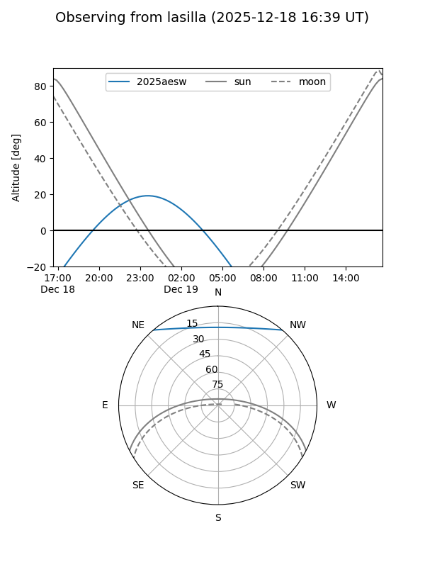
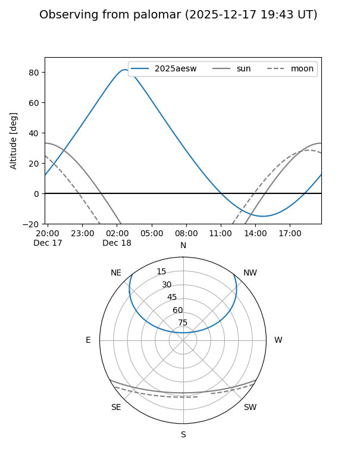
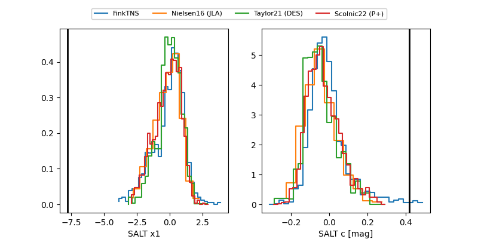

2025aesw
Target 2025aesw at 2025-12-18 11:17
Aliases and brokers:
FINK: fink-portal.org/ZTF25acemscy
Lasair: lasair-ztf.lsst.ac.uk/objects/ZTF25acemscy
ALeRCE: alerce.online/object/ZTF25acemscy
TNS: wis-tns.org/object/2025aesw
YSE: ziggy.ucolick.org/yse/transient_detail/2025aesw
alt names
ZTF25acemscy (ztf,fink_ztf)
2025aesw (tns,yse)
ATLAS25oui (atlas)
Coordinates:
equatorial (ra, dec) = 10.1678,+41.37899
equatorial (HMS+DMS) = 00:40:40.27,+41:22:44.38
galactic (l, b) = (120.7622,-21.44739)
Photometry
last ztfg=20.32, ztfr=19.02
4 ztfg, 4 ztfr detections
Lightcurve

Visibility


Additional plots
